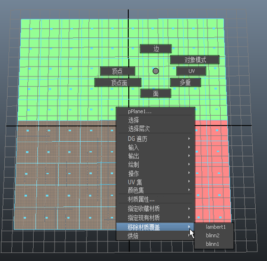
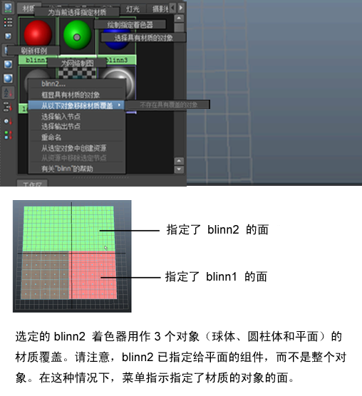
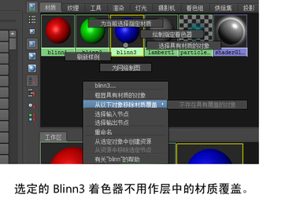

注： 提供的
新渲染设置系统现已取代传统渲染层，是 Maya 中的
默认系统。这种新方法可简化复杂场景的管理以便进行渲染，如今已成为建议的工作流。有关详细信息，请参见
Maya 渲染设置。
可以移除在渲染层上创建的任何材质覆盖，并还原为在主层中使用的材质着色器。
从渲染层中的对象移除材质覆盖：方法 1
- 在“渲染层编辑器”(Render Layer Editor)中，选择要从中移除材质覆盖的渲染层。
- 在场景视图中，在对象上单击鼠标右键，然后选择“移除材质覆盖”(Remove Material Override)。选定层的材质覆盖列表将显示在菜单中。
- 选择要移除的材质覆盖。

从渲染层中的对象移除材质覆盖：方法 2
- 打开“Hypershade”（“窗口 > 渲染编辑器 > Hypershade”(Window > Rendering Editors > Hypershade)）以查看要移除材质覆盖的材质样例。
- 在材质样例上单击鼠标右键，然后选择“从以下对象移除材质覆盖”(Remove Material Override From)。菜单将列出层中使用材质覆盖的所有对象。
- 从列表中选择要为其移除材质覆盖的对象。

如果某个材质当前未用作材质覆盖，则在材质样例上单击鼠标右键并选择“从以下对象移除材质覆盖”(Remove Material Override From)时，菜单将显示“不存在具有覆盖的对象”(There are no objects with override)。

提示： 如果需要查询材质是否已用作覆盖或将材质作为覆盖指定给的对象的名称，该菜单的内容也非常有用。